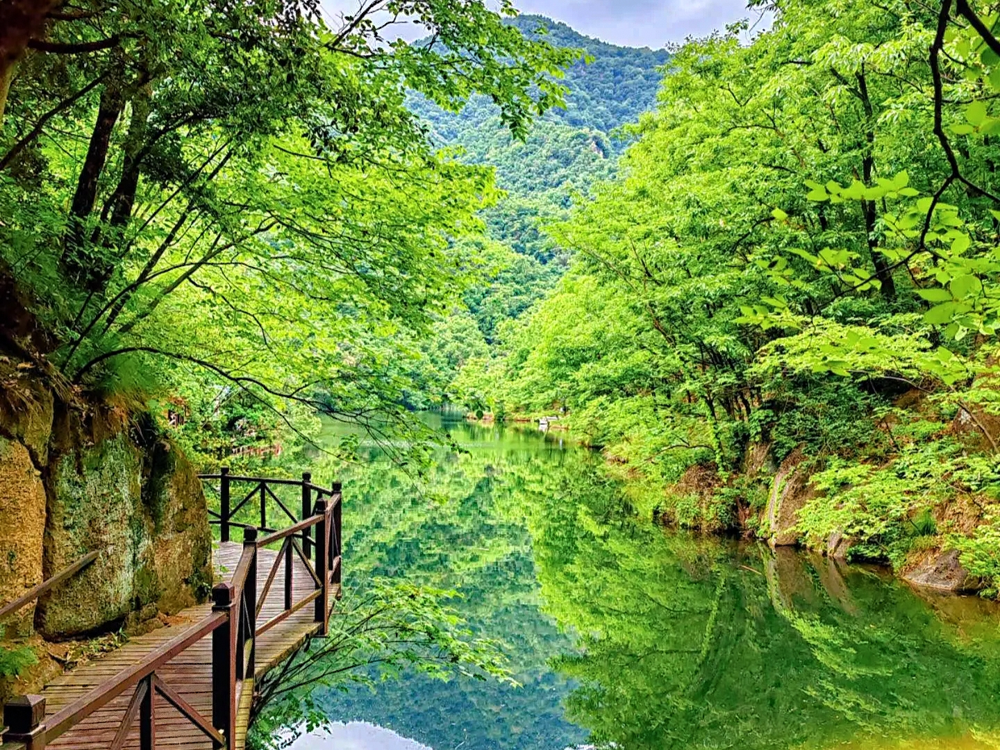

尧山风景区
尧山位于河南平顶山鲁山县西部，属伏牛山东段，是国家5A级旅游景区。主峰玉皇顶海拔2153.3米，森林覆盖率达97%，负氧离子丰富，有独特的石蛋、峰林地貌，是沙河发源地，潭瀑温泉遍布，动植物资源多样，不乏珍稀品种。因尧帝裔孙刘累祭祖得名，是刘姓发源地、墨子故里，留存众多古迹和石刻。景区有揽胜台、玉皇顶等240多处景观，配备索道、漂流等体验项目，形成特色旅游品牌，多次获评省“十佳风景名胜区”等荣誉。
中原第一大佛
中原第一大佛位于河南平顶山鲁山县赵村乡上汤村佛泉寺，是世界最高佛教造像，总高208米，由身高108米的佛像搭配莲花座、金刚座、须弥座构成，铸造耗用铜3300吨、黄金108公斤、特殊钢15000余吨 ，13300块铜板焊接而成。1997年由林胜标大师设计，2002年动工，2007年竣工，2008年9月29日经两岸四地108位高僧大德开光，其法相庄严，遵循佛教仪规塑造，承载着深厚宗教文化意义，同时作为国家5A级旅游景区的核心景观，吸引众多游客前来观光祈福。

画眉谷
鲁山县画眉谷生态旅游区地处河南省鲁山县尧山镇，位于尧山风景名胜区北麓，为国家AAAA级旅游景区与河南省重点风景名胜区。其总面积30平方公里，植被覆盖率达95% ，自然景观丰富，有“袖珍三峡”“田园仙境”等美誉。景区内盘龙谷碧潭成串、基岩光滑；杜鹃湖碧波荡漾，两岸杜鹃繁茂；红石峡岩石呈红色，造型奇特；红石瀑、六叠瀑落差较大，其中六叠瀑分六级跌落，莲花瀑、飞玉瀑、浴女瀑各具特色。此外，还有千亩杜鹃花海、古木参天的原始森林，以及骆驼峰、仙掌峰等奇峰怪石，药王洞、水帘洞等景点，共同构成一幅迷人画卷。
